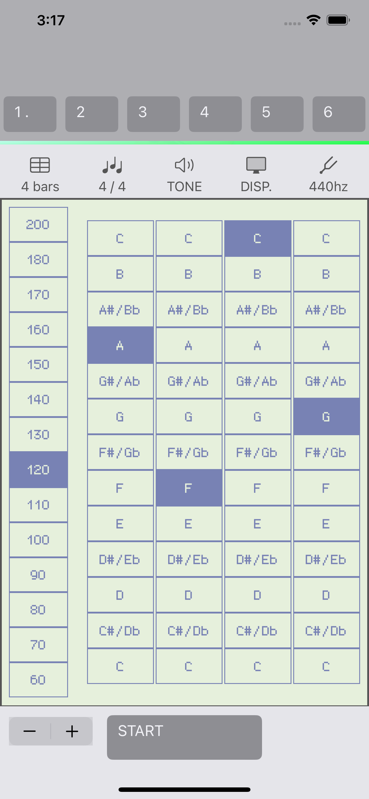
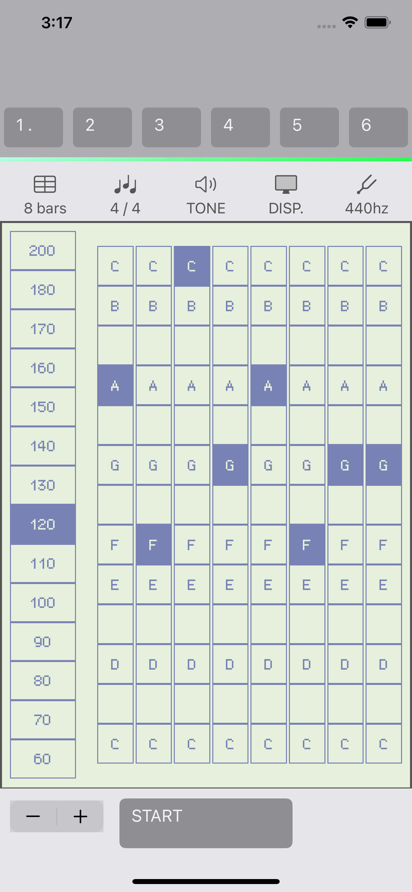
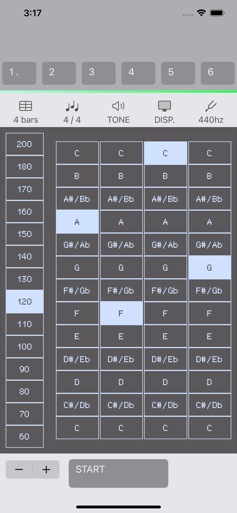

English / 日本語
4 bars Metronome
About 4 bars Metronome
'4 bars Metronome' is a metronome that plays 4 bars bass note.
You can start jam session immediately with very simple operation.
  
Features
- Metronome that plays bass sound
- Switchable number of measures (4 bars / 8 bars)
- Switchable BPM (min. 40, max. 250)
- Switchable base pitch (440hz, 442hz)
- Changeable Tones
- Switchable settings
System requirement
This software is an application that runs on iPhone and iPad.
Supported OS :
・iOS 16.4 -
Download
Others
- yamahito software holds the copyright of 4 bars Metronome.
History
- 06/18/2023 Ver1.0 Initial Release
- 06/18/2023 Ver1.1 Update App Store page.
Web: https://yamahito-software.github.io/docs/
Mail:
Copyright 2023 yamahito software